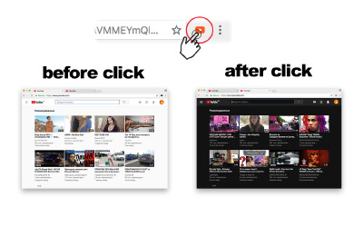

nbsp; Dark YouTube Theme - расширение, которое позволяет изменить тему ютуба на темную.
nbsp; Dark YouTube Theme поможет уменьшить напряжение на глаза при просмотре ютубе ночью. Всего один щелчок, чтобы включить / выключить ночной режим.